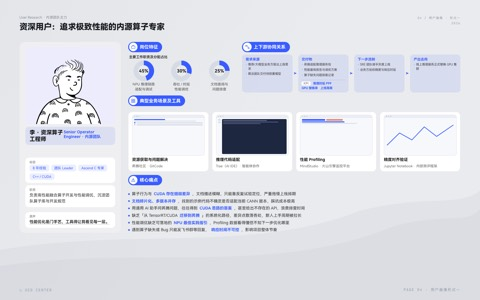
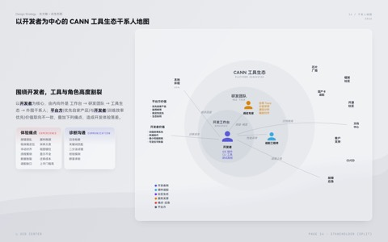
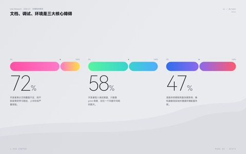
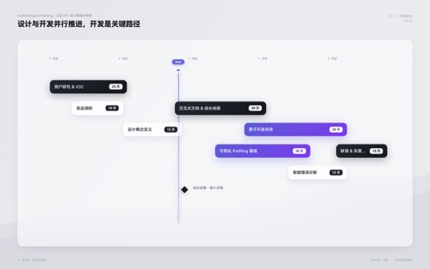
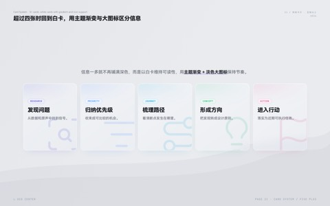
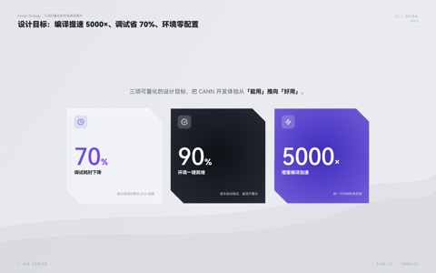
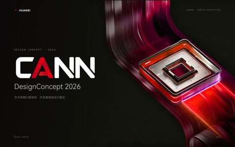
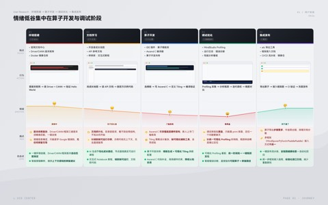

01
背景
Context
已有可视化能力开源 Skill 观察
说明为什么需要专属汇报材料系统
面向产品、设计与研究汇报的网页 PPT Skill：用精调模板、组件和交互 runtime，承接从洞察到方案的完整叙事。
此前的竞品分析 Skill 已验证：复杂研究内容可以通过可视化结构被清楚组织。

我们的观察是：开源 Skill 已能生成风格化演示，却主要服务单一观点的讲述。


扩展的重点不是重做演示，而是把已有能力补成设计师可复用的材料系统。
从常见汇报场景梳理结论、证据、图形与信息层级，再总结可反复使用的表达模板。
把字体层级、冷灰分析页、黑底设计点、色彩 token 与卡片层次收敛成可复用规则。
把高频内容路由到专属结构：旅程、画像、竞品、机会矩阵与设计点不再共用通用卡片。
将内容路由、组件骨架、质检与完整翻页 runtime 一起交给 AI，保证每次生成的材料能讲、能跳转。
标题写判断
内容多就拆页
组件按任务调用
flowchart LR
subgraph LEFT[" "]
direction TB
RESEARCH["<div class='mmd-card research'><div class='mmd-card-head'><b>用户研究与洞察</b><small>USER INSIGHT</small></div><p>从用户原声、全链路旅程到三种信息密度的用户画像。</p><div class='mmd-tiles'><figure class='mmd-tile'><img src='assets/template-tree/voc-wall.jpg' /><figcaption>用户反馈墙</figcaption></figure><figure class='mmd-tile'><img src='assets/template-tree/user-journey.jpg' /><figcaption>用户旅程</figcaption></figure><figure class='mmd-tile'><img src='assets/template-tree/persona-deep.jpg' /><figcaption>单人用户画像</figcaption></figure><figure class='mmd-tile'><img src='assets/template-tree/persona-compare.jpg' /><figcaption>多人用户对比</figcaption></figure><figure class='mmd-tile'><img src='assets/template-tree/persona-board.jpg' /><figcaption>用户画像白板</figcaption></figure></div></div>"]:::transparent
ANALYSIS["<div class='mmd-card analysis'><div class='mmd-card-head'><b>设计问题与机会分析</b><small>PROBLEM / OPPORTUNITY</small></div><p>把比较、关系、机会与证据收束为可讨论的设计判断。</p><div class='mmd-tiles'><figure class='mmd-tile'><img src='assets/template-tree/competitive-compare.jpg' /><figcaption>竞品对比</figcaption></figure><figure class='mmd-tile'><img src='assets/template-tree/stakeholder-map.jpg' /><figcaption>生态干系人地图</figcaption></figure><figure class='mmd-tile'><img src='assets/template-tree/opportunity-matrix.jpg' /><figcaption>机会优先级矩阵</figcaption></figure><figure class='mmd-tile'><img src='assets/template-tree/score-heatmap.jpg' /><figcaption>多维评分热力图</figcaption></figure><figure class='mmd-tile'><img src='assets/template-tree/experience-architecture.jpg' /><figcaption>体验架构</figcaption></figure><figure class='mmd-tile'><img src='assets/template-tree/evidence-matrix.jpg' /><figcaption>证据矩阵</figcaption></figure><figure class='mmd-tile'><img src='assets/template-tree/derivation-flow.jpg' /><figcaption>问题到结论推导</figcaption></figure></div></div>"]:::transparent
end
ROOT["<div class='mmd-root'><small>CONTENT ROUTER</small><b>Report PPT Skill</b></div>"]:::transparent
subgraph RIGHT[" "]
direction TB
PROGRESS["<div class='mmd-card progress'><div class='mmd-card-head'><b>数据呈现与项目进展</b><small>DATA / ROADMAP</small></div><p>把关键数字、重点信息与阶段推进节奏放在同一组。</p><div class='mmd-tiles'><figure class='mmd-tile'><img src='assets/template-tree/metric-pills.jpg' /><figcaption>关键指标概览</figcaption></figure><figure class='mmd-tile'><img src='assets/template-tree/data-highlight.jpg' /><figcaption>数据重点解读</figcaption></figure><figure class='mmd-tile'><img src='assets/template-tree/roadmap.jpg' /><figcaption>项目路线图</figcaption></figure></div></div>"]:::transparent
DESIGN["<div class='mmd-card design'><div class='mmd-card-head'><b>设计点表达</b><small>DESIGN EXPRESSION</small></div><p>依内容密度选择章节封、左右图文、上下 hero 或图文设计点。</p><div class='mmd-tiles'><figure class='mmd-tile'><img src='assets/template-tree/design-chapter-cover.png' /><figcaption>设计章节封面</figcaption></figure><figure class='mmd-tile'><img src='assets/template-tree/design-left-right.jpg' /><figcaption>左文右图要点页</figcaption></figure><figure class='mmd-tile'><img src='assets/template-tree/design-hero.jpg' /><figcaption>大图设计点页</figcaption></figure><figure class='mmd-tile'><img src='assets/template-tree/design-learning.jpg' /><figcaption>图文设计点页</figcaption></figure></div></div>"]:::transparent
end
RESEARCH --> ROOT
ANALYSIS --> ROOT
ROOT --> PROGRESS
ROOT --> DESIGN
classDef transparent fill:transparent,stroke:transparent,color:#20242D
style LEFT fill:transparent,stroke:transparent
style RIGHT fill:transparent,stroke:transparent
linkStyle default stroke:#9BA5B4,stroke-width:1.2px
guizang 等开源网页 PPT Skill通常以约 6 个通用页面组织内容，更适合单一观点的演讲式展示。
用户旅程、三种用户画像、干系人地图、竞品对照、机会矩阵与数据进展都有对应结构。
按材料任务组织信息层级，而不是在同一通用版式中靠缩字或堆卡片完成表达。
标题写结论、区分证据与方案，并保留翻页、概览、全屏与 URL 页码定位。
用玻璃白卡组织用户、关系与证据，回答“发生了什么、涉及谁、机会在哪里”。


把关键数字、阶段状态和推进节奏放在同一组，回答“现在到哪里、下一步如何推进”。


用纯黑底、底部双色光晕和渐变标题讲设计选择；根据内容密度在两种设计点版式中选择。


统一三种页面基调、文案和内容路由，并用翻页、概览、全屏与页码定位支撑现场讲解。


标题脱离版式也应独立成立，直接说清受众要记住的发现或选择。
证据是事实；推论标明判断；方案是待验证的设计响应，不能把承诺当结果。
每个设计点对应问题、作用机制、用户收益，以及必要的依赖或验证信号。
去掉口语、空泛词和不常见表达；内容多时拆页，不靠缩字或堆术语。
使用过程中的具体建议会进入下一轮模板与规则优化，Skill 持续迭代中。
基于本 Skill 形成的材料，已直接支撑面向计算、华为云、装备部等产品线的多个产品汇报。